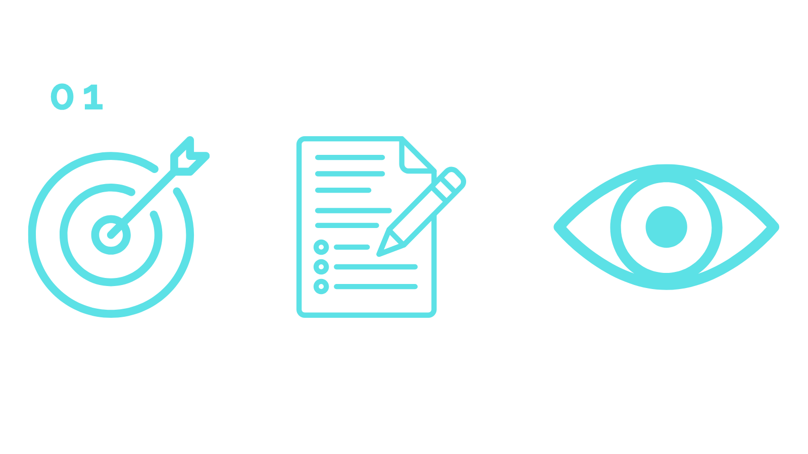
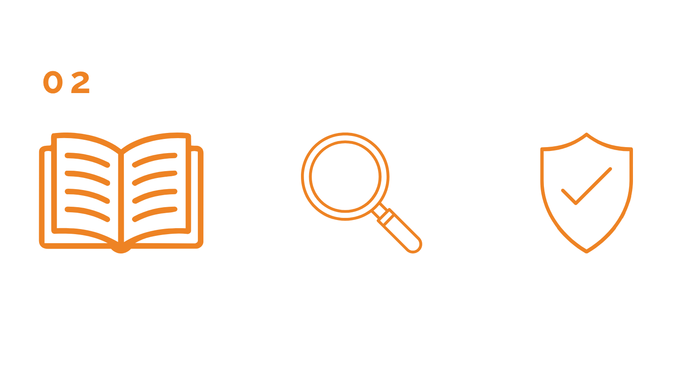
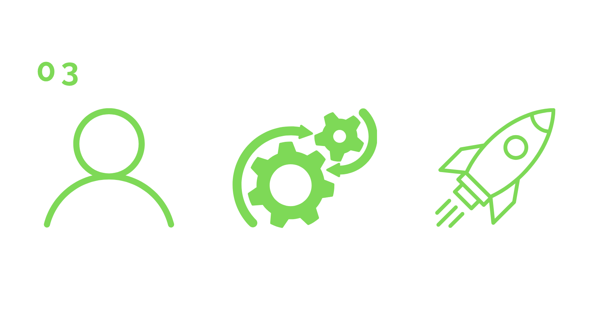
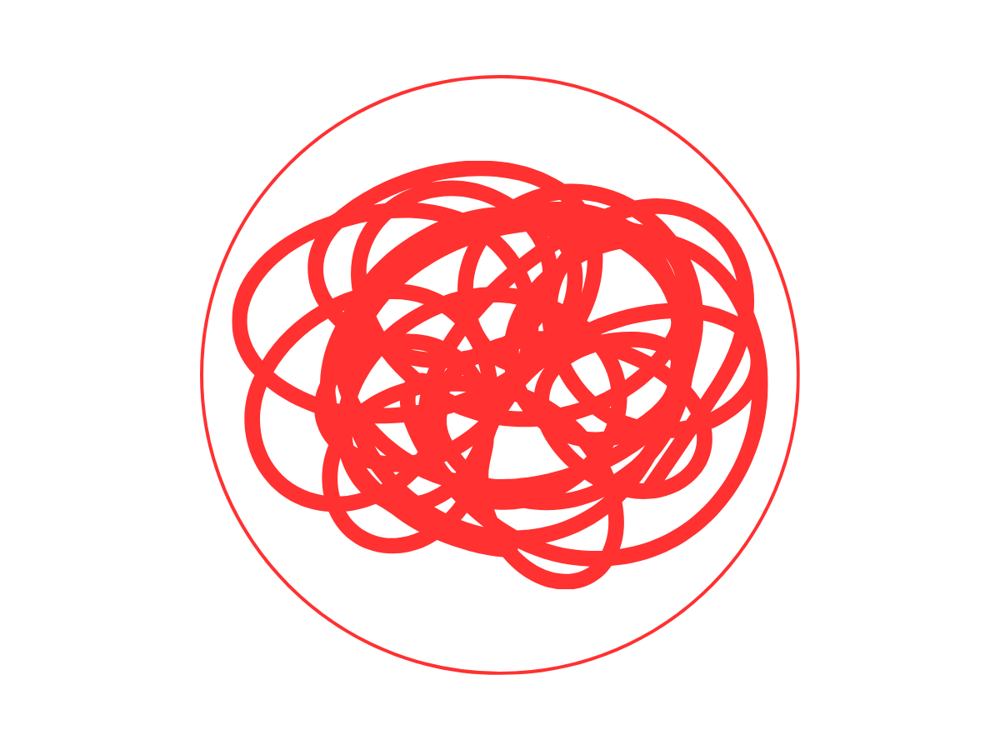
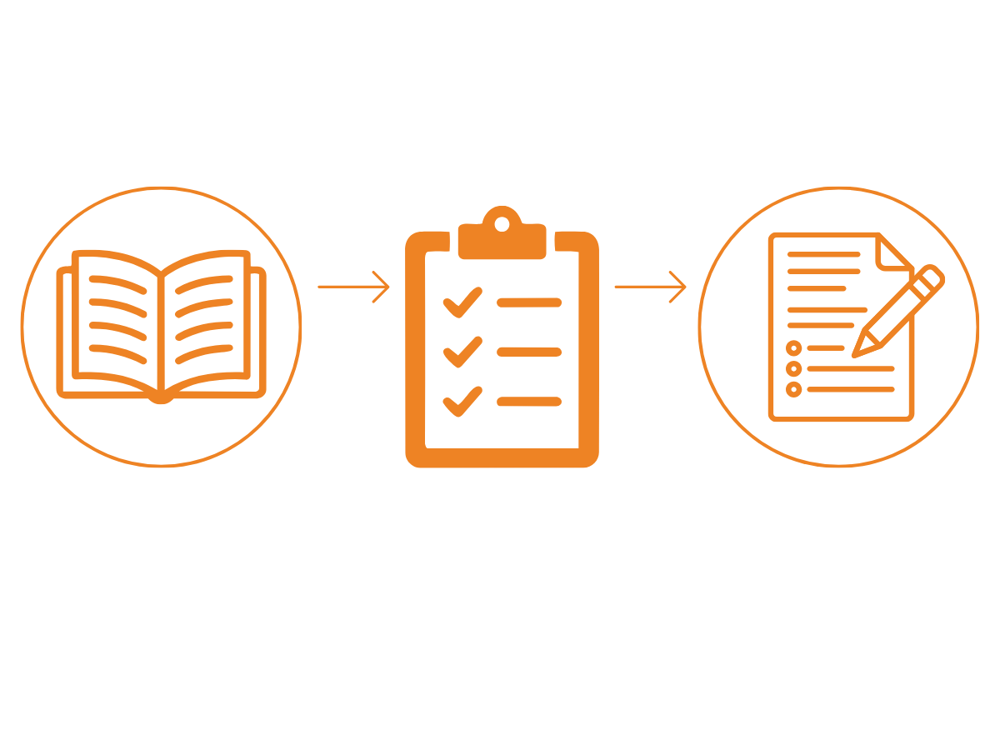
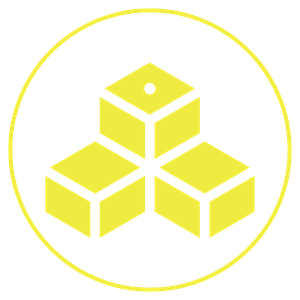

Marketing Activity Without Business Connection
You post consistently. But if you stopped tomorrow, what would actually change?
STRATEGIC VISIBILITY • OPERATIONS • AI GOVERNANCE
I help organizations replace scattered marketing, disconnected operations, and AI uncertainty with structured systems that improve visibility, execution, and long-term growth.
Visibility Authority Growth
Strategy
Clarity · Positioning · Direction
Operations
Processes · Systems · Execution
AI Governance
Systems · Quality · Risk Control
Content & Distribution
Multi-Platform · Organic Reach
Measurable Results
Visibility · Clients · Growth
You post consistently. But if you stopped tomorrow, what would actually change?
You upgraded the tools. But did you actually buy back time, or just create another thing your team has to manage?
What happens when the person who knows how everything works isn't available anymore?
Scattered digital activity. Marketing, visibility, and execution were operating as separate efforts instead of one connected growth system.
Connected strategy, content, distribution, visibility, and execution into one structured operating approach.
512 → 5,595
LinkedIn Followers
10.9x
Follower Growth
Additional evidence available upon request.
Google Business Profile performance data is available.

A positioning decision shouldn't disappear once the content calendar begins.

Being visible isn't enough. People need a reason to believe you.

If execution depends on one person's memory, the business doesn't own the process.
I build the rules, documentation, and quality controls that make AI-assisted work consistent enough to use inside a real business.


Find What The Market Can't See
A diagnostic framework for identifying overlooked visibility gaps, dormant assets, and missed growth opportunities.
System 02Connect The Pieces That Create Authority
A structured system connecting strategy, content, search, AI, and operations into a repeatable growth engine.

Find
Understand the real problem.
Connect
Find what the problem is connected to.

03Build
Create the system and implement it.
Execute
Put the system into action.
Measure
Measure what changed and what matters.
Document
Make knowledge usable beyond one person.
I don't wait for a title to tell me what's mine to fix.
I don't need every problem to arrive with a JOB TITLE attached to it.
Let's talk about it.
JP Imperial
Strategic Visibility • Operations • AI Governance